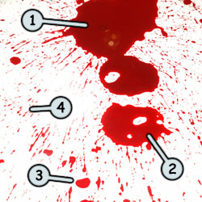
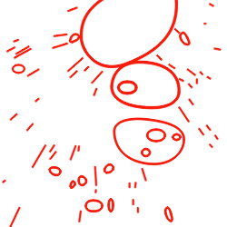
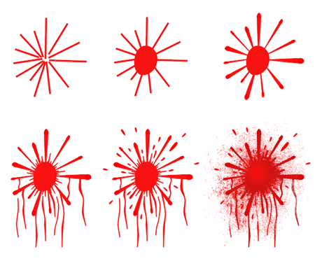
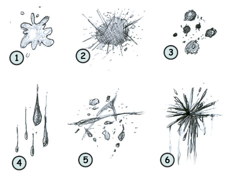

How to draw blood
Before learning how to draw blood: some fun facts before starting sketching!
- Each day, the average person will pump 300 gallons of recycled blood through his kidneys.
- Each women has around 4.3 liters of blood in their bodies while men have 5.5 liters.
 Knowing how to draw cartoon blood that look convincing is not easy. A splash of blood on a wall will never look like another one.
You can see on the image on your left that sometimes the blood can be ticker (1) or clearer (2).
Liquids are unpredictable so it's important that your drawing look spontaneous. Take a good look at this image to really understand how this splash of blood was created.
 The shapes behind this image are really basics. Circles for the drops of blood and lines for the splash effect.
Notice that some small drops of blood are made of circles while others are made of ovals.
It's impossible in this example to represent every single blood stain since they are too many!
Someone has been murdered! First, draw some lines to give the impression of a splash on a wall. Then, draw a circle in the middle.
Now sketch some lines to represent drops of blood going towards the floor. Finish your drawing by adding particle effect and by altering the color of the blood a little bit.

The example above taught us how to sketch a simple splash of blood on a wall (6). But this fluid can also comes in drops (4)(3), trails (5) or stains (2).
Remember to keep it spontaneous, organic and irregular. Don't hesitate to drop some liquid on a floor if you need more inspiration or examples.

Are you looking for cartoon images? Do you like the images available on this website?
Click here to learn how you could make them yours!
Go back from How to draw blood to home page
| Share this page: |  |  |  | |
 |  |  |  |